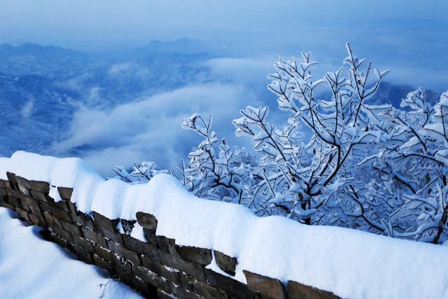
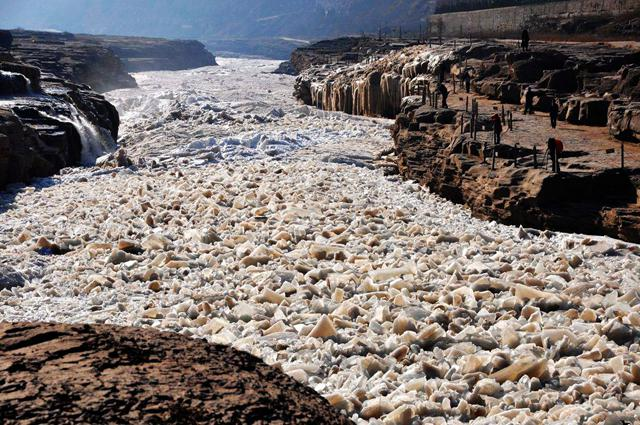
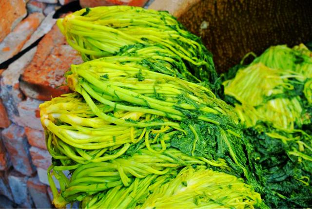
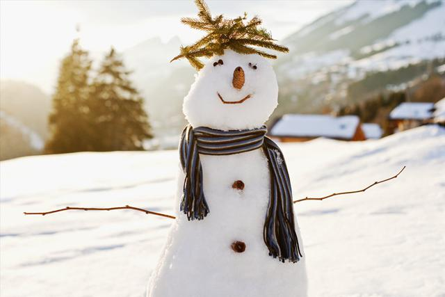

大雪是二十四节气中的第21个节气，此时太阳到达黄经255°，今年的大雪节气是12月7日（农历丁酉年十月二十日）。根据《月令七十二候集解》记载：“大雪，十一月节，至此而雪盛也。”大雪三候为：“一候鹖鴠不鸣；二候虎始交；三候荔挺出。”此时天气寒冷，寒号虫（一种鸟名）停止鸣叫；老虎开始有求偶行为；荔，又作蠡，即马薤，一种药材，因感受到阳气的萌动而抽出新芽。
大雪的到来，预示着天气更加寒冷。这时，大部分地区的最低温度都降到了0℃或以下，在强冷空气前沿，冷暖空气交锋的地区，通常会降大雪，甚至暴雪。大雪和小雪、雨水、谷雨等节气一样，都是直接反映降水的节气。
降雪有利于缓解冬旱，消除农田病虫等，而降雪结冰容易影响交通，暴雪封山、封路还会对牧区草原人畜安全造成威胁。冻雨对交通、电力、通讯都会造成极大影响，还会造成果树损毁。西北、东北以及长江流域大部分地区，先后会有雾凇出现。雾凇是一种自然美景，有时也会成为一种自然灾害，严重时会压断树木，影响交通、供电和通信等。在内蒙古包头河段，如果强冷空气来得晚，还可能引发流凌灾害。
大雪时节，除华南和云南南部无冬区外，大地已披上冬装，冬小麦停止生长，而此时的农事活动仍不轻松。
积雪覆盖大地，使地面及作物周围的温度不会降得过低，为冬作物创造了良好的越冬环境。积雪融化时，土壤水分含量增加，正是作物春季生长需要的。正所谓“瑞雪兆丰年”，“今年麦盖三层被，来年枕着馒头睡”等农谚所表达的，也是这个含义。此时，还需修葺禽舍、牲畜圈墙等，帮助禽畜安全过冬。俗话说“大雪纷纷是旱年，造塘修仓莫等闲”。大雪节气还需加紧兴修水道、积肥修仓、粮食入仓等事务。手艺之家此时会将主要精力用在手工艺制作上，如印年画、磨豆腐、编织等。
立冬东北风，冬季好天空。
立冬有雨防烂冬，立冬无雨防春旱。
重阳无雨看立冬，立冬无雨一冬干。
立冬小雪紧相连，冬前整地最当先。
立冬晴，一冬晴；立冬雨，一冬雨。
西风响，蟹脚痒，蟹立冬，影无踪。
立冬种豌豆，一斗还一斗。
立冬前犁金，立冬后犁银，立春后犁铁。
腌肉 老南京有句俗语，叫做“小雪腌菜，大雪腌肉”。大雪节气一到，南方很多人家忙着腌制“咸货”。大雪节气天气寒冷，在不易保鲜的古时，人们发现此时腌制肉类食品不易变质，于是大雪节气一到，家家户户就忙着腌制咸肉，以迎接新年。
观赏封河 “小雪封地，大雪封河”，黄河以北有“看红装素裹，分外妖娆”的北国风光，长江流域也有“雪似梅花，梅花似雪”的景致。大雪节气，河湖结冰，许多公园湖面的溜冰场也开放了，供人们滑冰嬉戏。
腌雪菜 大雪节气前后，有些地方的老人会腌一些雪菜过冬食用。雪菜又叫雪里蕻，属于性温、味甘辛的蔬菜，还含有胡萝卜素和食用纤维素。从养生的角度看，雪菜有助于增加大脑中氧含量，起到醒脑提神的作用。在寒冷的冬季，来一碗热气腾腾的雪菜面或雪菜豆腐，应该是很温暖的吧！
捕鱼 大雪时节也是捕获乌鱼的好时节。俗谚“小雪小到，大雪大到”是指从小雪时节，乌鱼群就慢慢进入台湾海峡，到了大雪时节因为天气越来越冷，乌鱼群沿水温线向南回游，汇集的乌鱼也越来越多，整个台湾西部沿海都可以捕获乌鱼，产量非常高。
大雪是进补的好时节。冬令进补能提高人体的免疫力，促进新陈代谢，使畏寒的现象得到改善。俗话说“三九补一冬，来年无病痛”，此时宜温补助阳，可适当多吃大蒜、生姜、萝卜、大葱、羊肉、红薯、山药、桂圆、栗子、芝麻、花生等性属温热的食物，有助于御寒。俗话说“冬吃萝卜夏吃姜，不用医生开药方”，萝卜在民间被称为“小人参”，而葱姜蒜尽管性温味辛，有些刺鼻，却可以帮助我们温阳解毒，既可以预防风寒感冒，也可以缓解头痛鼻塞等症状。
中医认为，人体的头、胸、脚最容易受寒邪侵袭。天气寒冷，会使血管收缩，容易出现头痛、头晕的症状。对于脑血管病人来说，寒冷很容易诱发脑血管疾病，因此，大雪节气需格外注意防寒保暖。
冬日清晨，往往是最冷的时候，空气中的氧含量最低，不宜锻练。另外，冬季的早晨容易出现大雾天气，雾滴中的悬浮颗粒吸进肺里，会对人体健康非常不利。这一时节最佳的户外活动时间是在下午。运动穿着不宜过厚过紧，运动前要做些热身活动，微汗时则需要休息，谨防感冒。